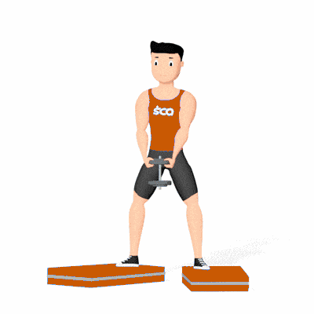

Agachamento Sumô

Exercício de musculação que fortalece quadríceps, glúteos, posteriores da coxa e adutores. A posição ampla dos pés aumenta a ativação dos adutores e a estabilidade do quadril. Indicado para praticantes de todos os níveis.
Ficha Técnica
Tipo: Musculação
Grupo Muscular: Perna
Aparelho: Nenhum
Músculos: Nenhum
Como realizar
- Segure um halter à frente do corpo, mantendo os braços estendidos;
- Afaste os pés além da largura dos ombros, com a ponta dos pés voltada para fora;
- Inspire e flexione os joelhos, descendo o quadril até próximo à linha paralela ao solo;
- Mantenha o tronco ereto e abdome contraído durante todo o movimento;
- Expire e retorne à posição inicial, estendendo os joelhos e quadris.
 RC STORE
RC STORE